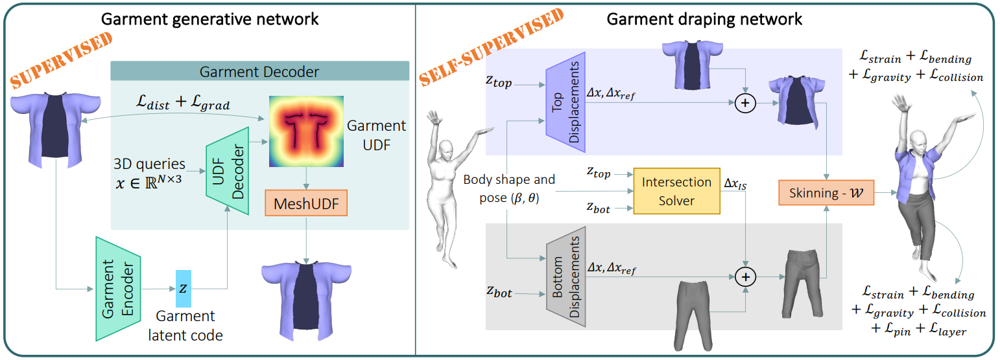
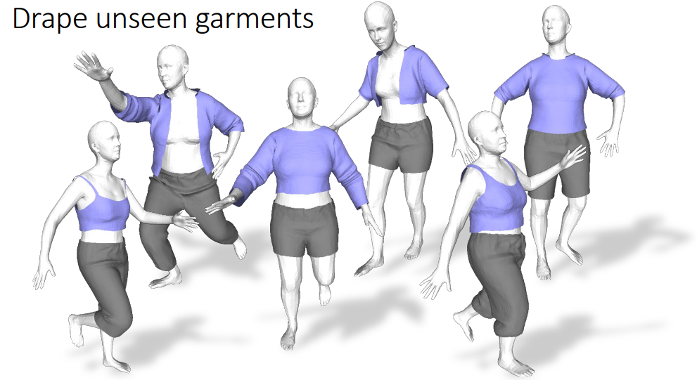
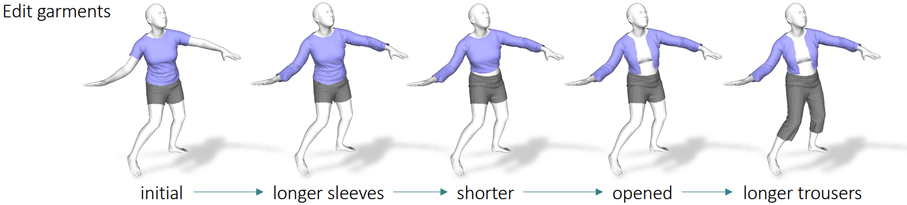
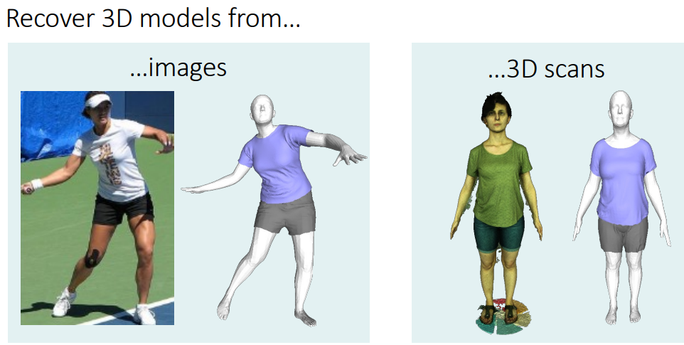

DrapeNet: Garment Generation and Self-Supervised Draping
Luca De Luigi2, Ren Li1, Benoit Guillard1, Mathieu Salzmann1, Pascal Fua1
1 CvLab, EPFL 2 University of Bologna
Abstract
Recent approaches to drape garments quickly over arbitrary human bodies leverage self-supervision to eliminate the need for large training sets. However, they are designed to train one network per clothing item, which severely limits their generalization abilities. In our work, we rely on self-supervision to train a single network to drape multiple garments. This is achieved by predicting a 3D deformation field conditioned on the latent codes of a generative network, which models garments as unsigned distance fields. Our pipeline can generate and drape previously unseen garments of any topology, whose shape can be edited by manipulating their latent codes. Being fully differentiable, our formulation makes it possible to recover accurate 3D models of garments from partial observations -- images or 3D scans -- via gradient descent.Approach

Our approach consists of a garment generative network (left) and a garment draping network (right). The generative network is trained to embed garments into compact latent codes and predict their unsigned distance field (UDF) from such vectors. UDFs are then meshed using [MeshUDF]. The garment draping network, conditioned on the latent codes of the generative network, is trained in a self-supervised way to predict the displacements ∆x and ∆xref to be applied to the vertices of given garments, before skinning them according to the target body. It includes an Intersection Solver module to prevent intersection between top and bottom garments.
Garment Draping
New garments can be sampled from the latent spaces of the generative networks, and deformed by the draping networks to fit to a given body.
Garment Editing

We can edit a specific garment feature while leaving other aspects of the garment geometry unchanged by manipulating the latent code learned by the generative networks.
Garment Recovery
Being a differentiable parametric model, our framework can reconstruct 3D garments by fitting observations such as images or 3D scans.
BibTeX
If you find our work useful, please cite it as:@inproceedings{de2023drapenet,
author = {De Luigi, Luca and Li, Ren and Guillard, Benoit and Salzmann, Mathieu and Fua, Pascal},
title = {{DrapeNet: Garment Generation and Self-Supervised Draping}},
booktitle = {Proceedings of the IEEE/CVF Conference on Computer Vision and Pattern Recognition},
year = {2023}
}
References
[MeshUDF]
B. Guillard, F. Stella, P. Fua. Meshudf: Fast and differentiable meshing of unsigned distance field networks. In Computer Vision–ECCV, 2022.